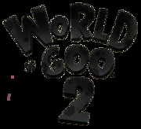

|  | |
| Tiempo de juego | No Jugado |
| Última actividad | Nunca |
| Añadido | 11/6/2024 15:35:16 |
| Modificado | 11/8/2024 12:00:59 |
| Estado de finalización | No Jugado |
| Librería | Playnite |
| Fuente | 2TB GAS |
| Plataforma | PC (Windows) |
| Fecha de lanzamiento | 8/2/2024 |
| Puntuación de la Comunidad | |
| Puntuación de la Crítica | 84 |
| Puntuación de usuario | |
| Género | Puzzle |
| Desarrollador | 2D Boy Tomorrow Corporation |
| Editor | Tomorrow Corporation |
| Característica | Single-player |
| Enlaces | Wikipedia Official website |
| Tag | [People] artist: Jay Epperson [People] artist: Kyle Gabler [People] artist: Kyle Gray [People] artist: Peter Hedin [People] composer: Jonny Trengrove [People] composer: Kyle Gabler [People] designer: Kyle Gabler [People] designer: Kyle Gray [People] producer: Ron Carmel [People] programmer: Aleš Mlakar [People] programmer: Allan Blomquist [People] programmer: Miguel Ángel Pérez Martínez [People] programmer: Noel Llopis [People] writer: Kyle Gabler |
World of Goo 2 is a 2024 physics-based puzzle video game developed by independent game developers 2D Boy and Tomorrow Corporation. It is a sequel to World of Goo (2008). It was released on August 2, 2024, after being delayed from its original release date of May 23, 2024.
Like its predecessor, the game consists of building structures from goo balls in order to solve puzzles.
Development of a sequel to World of Goo was reported on December 8, 2023. While the release date was initially set for May 23, 2024, it was later pushed to August.
World of Goo 2 was released for PC and Nintendo Switch on August 2, 2024. A physical release for the Nintendo Switch was announced at the same time, scheduled for October 29, 2024.
The translation was done by volunteers. The following languages are available in the game, on all platforms: English, French, German, Latin American Spanish, Castilian Spanish, Japanese, Brazilian Portuguese, Italian, Ukrainian, Simplified Chinese, Traditional Chinese, Korean, Polish, and Russian.
Initial critical reviews were positive, with a top critic average on OpenCritic of 82/100. Nintendo Life called the game "a fantastic sequel to a stone-cold classic." Shacknews suggested that "for fans of the first game, of course, World of Goo 2 is a no-brainer". GamingTrend offered a mostly positive review, stating that "while it's somewhat of a mixed bag, there's far more good than bad here".